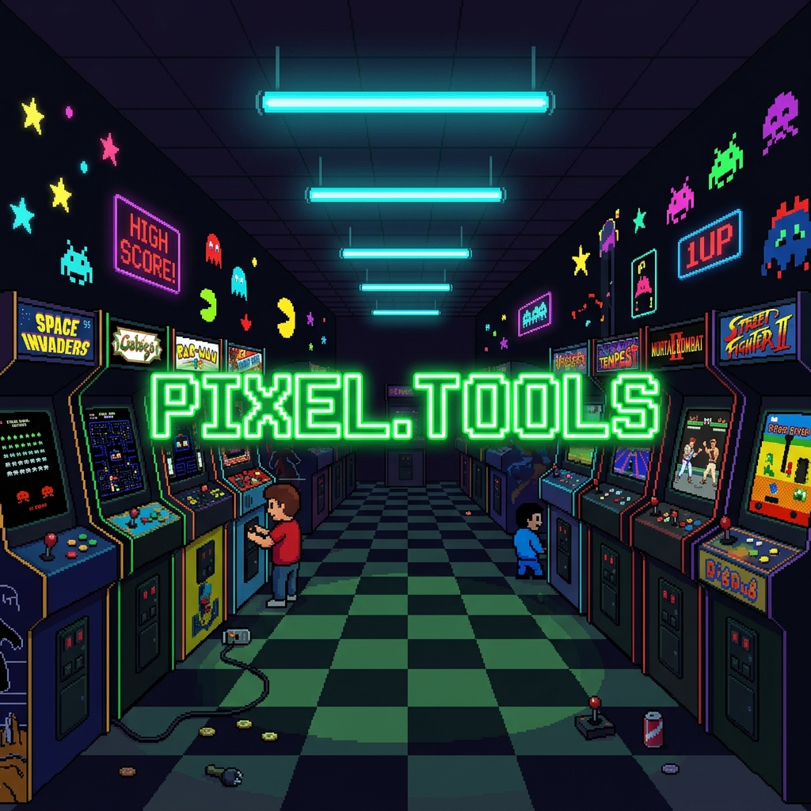

00:00:00
LOADING...


PIXEL.TOOLS
// YOUR RETRO WEB TOOLBOX //
▸ COMMAND CENTER
Select a tool from the sidebar or the grid below. PLAYER ONE, START!
WELCOME BACK
PLAYER ONE
TOOLS AVAILABLE
16
TODAY'S DATE
--
TODO STREAK
0
DAYS
IP GEOLOCATE
Lookup IP info
SUBNET CALC
CIDR network tool
PING SIM
HTTP latency test
BASE64 / URL
Encode & decode
PALETTE GEN
8-bit color palettes
TEXT TOOLS
Case & regex
TODO LIST
Tasks + streaks
POMODORO
Focus timer
JSON FORMAT
Validate & pretty
AI CTX OPT
LLM token trimmer
MICRO-DIGEST
Instant doc summary
CONTENT WIZARD
Multi-format repost
HD FORMAT
WebGPU/WASM upscale
STEM SEPARATOR
ONNX vocal splitter
LOUDNESS MATCH
Spotify/YT normalize
WIN DEBLOATER
GUI → PowerShell .ps1
⬡ AI CTX OPTIMIZER
Intelligent code trimmer for LLM token efficiency.
⊟ MICRO-DIGEST ENGINE
Instant document summaries — 100% client-side.
⇌ CONTENT WIZARD
Convert a single idea to multiple social formats.
⬆ HD FORMAT
Local image upscale preview via canvas.
♪ STEM SEPARATOR
Vocal & instrument splitter — ONNX Web ready.
≋ LOUDNESS MATCHER
Normalize to -14 LUFS via Web Audio API.
⊠ WINDOWS DEBLOATER
GUI to Script — build a custom optimizer .ps1 from your selections. Nothing runs in the browser.
▸ OPTIMIZATION MODULES
Toggle modules below. GENERATE OPTIMIZER downloads debloat_optimizer.ps1 for manual review in elevated PowerShell.
STATUS
CHECK MODULES AND PRESS GENERATE OPTIMIZER — output is a local .ps1 download only.
PIXEL.TOOLS v1.0.0
TOOL: HOME
MEM: OK